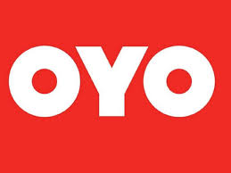
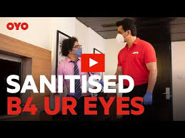
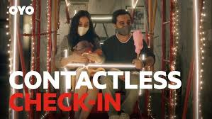

How India's hospitality giant rebuilt trust through visible safety and frictionless convenience during crisis recovery.

In hospitality's darkest hour, OYO didn't compete on price—they rebuilt trust through visible proof and frictionless experience. Both campaigns aligned product reality with customer psychology perfectly.
This case study analyzes "Sanitised Before Your Eyes" — making hygiene visible to destroy fear — and "Contactless Check-in" — turning safety into everyday convenience. Sonu Sood's credibility amplified both.
OYO proves crisis marketing wins when you solve the real barrier: customer confidence, not just awareness.
Post-crisis research revealed the truth: price wasn't the barrier—trust was. Customers feared unclean rooms despite discounts. OYO solved this by making sanitization visible, not claimed.
Instead of "we clean rooms," the campaign showed staff sanitizing right before your eyes. This psychological shift—seeing is believing—destroyed skepticism instantly. Simple, direct, unforgettable.
"Visible proof beats verbal promises. Sonu Sood's credibility + real-time sanitization created instant trust. Brand recall and consideration skyrocketed."
Sonu Sood's involvement added familiarity during his peak trust period. 360° distribution ensured repetition across digital, print, radio. Result: customers trusted OYO again, bookings resumed.

Safety fears extended beyond rooms to human contact. OYO solved this with phone-based check-in: scan, verify, grab key, walk in. No queues, no paperwork, no interaction.
The genius was simplicity. Not "cutting-edge tech"—just everyday convenience. Sonu Sood showed real scenarios, making it instantly relatable. Awareness became immediate action.
"Contactless wasn't positioned as innovation—it was positioned as relief. Phone check-in shortened awareness-to-action journey dramatically across all channels."
360° execution hit YouTube, WhatsApp, social, print, radio. Product integration was perfect—see ad, use feature immediately. Customer experience matched promise exactly, building functional trust.

Visible sanitization destroyed skepticism instantly. Customers trust eyes over words—show the process, don't claim the outcome.
Peak trust timing with respected figure amplified message. Celebrity works when character aligns with category need.
Single emotional outcome (peace of mind) beats feature dumps. Clarity converts when trust is the barrier.
Emotional trust (hygiene) + functional trust (check-in) created complete narrative. Both campaigns reinforced each other.
Same message across all channels builds recall. Multi-platform repetition ensures message sticks during recovery.
Product delivery matched ad exactly. Broken promises kill trust—perfect execution builds category leadership.
OYO transformed crisis into opportunity by solving the real barrier: trust. "Sanitised Before Your Eyes" made safety visible. "Contactless Check-in" made it convenient. Sonu Sood amplified both.
The lesson for all brands: don't advertise features—show solutions to real customer fears. Proof, simplicity, and experience alignment win when confidence is broken.
Modern marketing succeeds when strategy, product, and communication solve actual problems together.
At Brand Business Talk, we help brands with research, strategy, market insights, and growth recommendations. Let's build your brand growth strategy together.